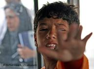

پذيرش > سایت نوشته ها > افزایش کودکآزاری و کار کودکان در ایران
 بچه های کار بچه های کار

 افزایش کودکآزاری و کار کودکان در ایران افزایش کودکآزاری و کار کودکان در ایران
3 مهر 1387 - دویچه وله / بهزاد کشمیریپور - نسخه قابل چاپ
پذیرش رسمی نامگذاری روزی برای کودکان به سال ۱۹۵۴ باز میگردد. سازمان ملل در نهمین مجمع عمومی خود پیشنهاد ایالات متحده را که دو سال پیش ارائه شده بود به تصویب رساند و به کشورهای عضو توصیه کرد روزی را مطابق با سنتها و اعتقادات خود به نام کودک بنامند. بسیاری از کشورها روزی در میانهی تابستان را برای این منظور برگزیدهاند، و آلمان امروز، بیستم سپتامبر را. به این مناسب نگاهی میکنیم به وضعیت ایران، که کودکآزاری و کار کودکان در سالهای اخیر در آن افزایش داشته است. روز کودک در ایران هفدهم مهرماه جشن گرفته میشود.
یونیسف از سال ۲۰۰۲ میلادی برنامهای پنج ساله را آغاز کرد که شعار آن «جهانی شایستهی کودکان» بود. سال گذشته عبارت «جهان بدون خشونت» به این شعار افزوده شد تا توجه به آزار کودکان و خشونتهای جسمی و جنسی علیه آنان بیشتر جلب شود. یونیسف حدود نیم قرن پیش کنوانسیون حقوق کودک را تدوین و به کشورهای عضو سازمان ملل ارائه کرد. جمهوری اسلامی اسفند ماه ۱۳۷۲ به این این پیمان پیوست و شورای نگهبان و مجلس، آن را بهصورت مشروط تصویب کردند. ایران این حق را برای خود محفوظ نگه داشته که مفادی از این پیمان را که با قوانین جاری کشور همخوان نیست رعایت نکند. از این مفاد یکی به آزادی بیان و انتخاب مذهب مربوط است و دیگری به ممنوعیت اعدام کودکان زیر ۱۸
قوانین، سد راه حقوق
شواهد و آمار نشان میدهد در ۱۴ سالی که از پیوستن جمهوری اسلامی به کنوانسیون یونیسف میگذرد وضعیت کودکان در ایران چندان بهتر نشده است. کارشناسان معتقدند، در کنار مسائل اقتصادی، اجتماعی و فرهنگی، یکی از موانع رعایت حقوق کودکان عدم تغییر و بهروز نشدن قوانین جاری کشور در این زمینه است. مطابق قانونی که همچنان در جمهوری اسلامی اعتبار دارد پدریا جد پدری ولی کودک به شمار میروند و تعقیب قضایی آنها در صورت صدمه زدن به فرزندانشان تقریبا ناممکن است. پدر مجاز است فرزندان خود را به منظور تربیت تنبیه کند. قوانین جاری میگویند این تنبیه نباید از آنچه «حدود تادیب» خوانده میشود فراتر رود، اما تعریف دقیق این حدود ارائه نشده است.
رشد کودکآزاری
بسیاری از نهادهای غیردولتی حامی حقوق کودکان اعتقاد دارند کودکآزاری در سالهای اخیر افزایش چشمگیر و نگرانکنندهای داشته است. کارشناسان تشدید فقر و بحرانهای خانوادگی را از عوامل اصلی این روند صعودی عنوان میکنند. بنابر آماری که انجمن حمایت از حقوق کودکان منتشر کرده کودکآزاری در سال ۸۶ به نسبت سال پیش از آن ۳ و نیم درصد افزایش داشته است.
این آمار با توجه به مراجعه به این انجمن تهیه شده و نمایانگر واقعیت و وضعیت کلی جامعه نیست. به گفتهی سعید مدنی یکی از کارشناسان آسیبهای اجتماعی «در مطالعهای که در سال ۸۰ در تهران انجام شده ۳۱ درصد دانش آموزان راهنمایی به نوعی دچار آزار جنسی شده بودند.» مطالعات مشابهی در شهرستانهای دیگر از درصد بالاتری از انواع آزارها خبر میدهند. با این همه صاحبنظران معتقدند در کنار ملاحظات فرهنگی و سنتی، که مانع از گزارش همهی موارد کودکآزاری میشود، در ایران برنامهای منظم و روشمند برای گزارشدهی و جمعآوری اطلاعات در این زمینه وجود ندارد.
کودکان خیابانی
بررسیها نشان میدهد آزار در میان کودکان خیابانی و کار بسیار بیشتر است، و آمار رو به رشد این کودکان در ایران میتواند تاییدی بر افزایش کودکآزاری باشد. مدیر عامل انجمن حمایت از کودکان سی و یکم تیر ماه اعلام میکند در سال ۷۵، ده درصد از کودکان بین ۱۰ تا ۱۸ سال مشغول کار بودهاند اما مطابق آمار سال ۸۵ این تعداد به ۱۲ و ۷ دهم درصد رسیده که یک میلیون و ۶۶۰ هزار کودک را شامل میشود. فرشید یزدانی به ایسنا میگوید با توجه به آمار جمعیت و تعداد دانش آموزان هم اکنون بیش از سه میلیون و۶۰۰ هزار کودک خارج از چرخهی تحصل قرار دارند. تعداد کودکان کار و خیابانی دقیقا مشخص نیست و نهادهای مسئول نه تنها آمار تشکلهای غیر دولتی را قبول ندارند که در مورد آمار یکدیگر نیز تردید نشان میدهند.
سازمان بهزیستی گزارش میدهد در سال جاری تعداد کودکان خیابانی شناسایی شده در تهران به نسبت سال پیش دو برابر شده. حسن عماری، معاون ادارهی کل آسیبهای اجتماعی شهرداری تهران، با اشاره به این که تا کنون حدود ۷ هزار کودک کار خیابانی شناسایی شدهاند، ۲۷ شهریور ماه، به برنانیوز میگوید، «آماری که سازمان بهزیستی ارائه داده ۲۰ هزار کودک کار خیابانی در تهران است که ما نمیدانیم این آمار را برچه اساسی به دست آوردهاند.»
کودکان کار
یونیسف فروردین امسال تعداد کودکان خیابانی در ایران را بین ۴۰۰ هزار تا یک میلیون نفر برآورد کرده است. مطابق آمار رسمی این تعداد در کل کشور از ۲۰۰ هزار نفر تجاوز نمیکند. گذشته از تمایل مسئولان به کوچک نشان دادن ابعاد کار کودکان، یکی از مشکلات مهم در این زمینه به ابهام در تعریف کودک و کار مربوط است. به گفتهی مدیر عامل انجمن حمایت از حقوق کودکان، در ایران بیش از ۹۰۰ هزار دختر خانهدار وجود دارند که با تعریف یونیسف کودک محسوب میشوند. یزدانی میگوید با افزودن این تعداد به کودکان کار، تعداد آنها از دو و نیم میلیون فراتر میرود.
دویچه وله
ارسال به
بالاترین
،
توییتر
،
فریندفید
،
فیسبوک
در همين بخش :
 یک خبر تلخ؟ یک قانونشکنی؟ یک تصمیم بخشنامهای جدید؟ یک خبر تلخ؟ یک قانونشکنی؟ یک تصمیم بخشنامهای جدید؟
چرا بایست به سکسوالیته پرداخت؟ / نفیسه آزاد
آزارجنسی خانگی؛ «قربانی» نه، «نجات یافته»
زنان، بزرگترین بازندگان بهار عرب
سانسور از دیدگاه جنسیتی/الهه امانی
ديگر بخش ها :
طرح یک میلیون امضا
|
مقالات
|
سایت نوشته ها
|
اخبار
|
گزارش كمپين
|
گفت و گو
|
علیه سکوت
|
كوچه به كوچه
|
نامه های شما
|
گزارش ویژه
|
گفتگو با اعضا
|
ویژه سالگرد کمپین
|
تصویر برابری
|
دل آرام علی
|
تریبون
|
مقالات
|
تاریخ شفاهی
|
خارج از چارچوب
|
کتابخانه
|
درباره کمپین
|
کمپین در شهرها
|
کمپین در بند
|
صدای تغییر
|
ویژه 22 خرداد
|
لایحه حمایت از خانواده
|
گالری
|
عشا مومنی
|
امیر یعقوبعلی
|
خدیجه مقدم
|
راحله عسگری زاده و نسیم خسروی
|
پروین اردلان،جلوه جواهری، مریم حسین خواه، ناهید کشاورز
|
زینب پیغمبرزاده
|
سعیده امین، سارا ایمانیان، محبوبه حسین زاده، ناهید کشاورز و همایون نامی
|
احترام شادفر
|
نسیم سرابندی زاده،فاطمه دهدشتی
|
وبلاگ مهمان
|
پرونده خرم آباد
|
دستگیری ها
|
مریم مالک
|
پرستو اللهیاری
|
مهرنوش اعتمادی
|
سمیه رشیدی
|
Other Languages
|
همراهان
|
«فراخوان کمپین ده روز با بهاره هدایت»
| English
|